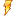
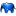
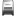

Einführung
Dieses Modul zeigt eine Übersicht eingegangener Meldungen über Netzwerkgeräte an, welche nicht erreichbar sind (siehe Uptime Alert in der Datei nedi.conf). Weiter kann angezeigt werden, wie diese Ereignisse klassifiziert worden sind, welcher NeDi-Benutzer diese Klassifizierung vorgenommen hat und innerhalb welcher Reaktionszeit dies geschehen ist. Eine Kalenderübersicht hift, diese Ereignisse richtig zuzuordnen.
Benutzung
Es können nach Wunsch im Feld [Auswahl] auch mehrere Reports auf einmal ausgewählt werden (Ctrl + Mausklick). Bei Bedarf kann die Limite der angezeigten Informationen via dem Drop Down Menü [Limite] angepasst werden. Optional kann man durch das Setzen des Häkchens im Feld [Alternativ] die Reihenfolge der ausgegebenen Informationen beeinflussen. Die Abfrage mit dem Button "Zeigen" starten.
Report <Geräte>
Dieser Report gibt Auskunft über die Anzahl der registrierten Ereignisse pro Netzwerkgerät.
- In der Spalte [Geräte | Geräte] werden auf der linken Seite die Symbole der Netzwerkgeräte mit den Gerätenamen aufgelistet. Klickt man auf eines der Gerätesymbole, werden zu dem jeweiligen Gerät detaillierte Informationen im Modul {Geräte Status} angezeigt. In der mittleren Spalte werden die zugehörigen IP-Adressen der Netzwerkgeräte aufgelistet. Klickt man auf eine IP-Adresse, wird eine Telnetverbindung zum jeweiligen Gerät aufgebaut. In der rechten Spalte wird der Betriebssystemtyp angezeigt.
- In der Spalte [Geräte | Kontakt] wird die eingetragene SNMP-Kontaktperson für die jeweiligen Netzwerkgeräte angezeigt.
- In der Spalte [Geräte | Ereignisse] wird anhand von Balkengraphiken die Anzahl der registrierten Ereignisse pro Gerät angezeigt. Zusätzlich wird die Anzahl für jedes Netzwerkgerät als numerischer Wert angegeben und die Balkengraphik wird abhängig von der Anzahl der Ereignisse mit unterschiedlichen Farben dargestellt.
Report <Statistik Gruppen>
Dieser Report gibt Auskunft über die Art der Ereignisse und wie häufig diese aufgetreten sind.
- In der Spalte [Statistik Gruppen | Gruppen] werden auf der linken Seite die Symbole der Ereignisgruppen aufgelistet. In der rechten Spalte wird die Bezeichnung der Ereignissymbole angegeben.
- In der Spalte [Statistik Gruppen | Anzahl] wird anhand von Balkengraphiken die Anzahl der registrierten Ereignisse pro Gruppe angezeigt. Zusätzlich wird die Anzahl für jede Gruppe als numerischer Wert angegeben und die Balkengraphik wird abhängig von der Anzahl der Ereignisse mit unterschiedlichen Farben dargestellt. Klickt man auf die Anzahl werden die zugehörigen Ereignisse im Modul {Monitoring Ereignisse} aufgelistet.
Report <Statistik Benutzer>
Dieser Report gibt Auskunft über die Anzahl der Ereignisse, welche durch die jeweiligen NeDi-Benutzer klassifiziert und bearbeitet wurden.
- In der Spalte [Statistik Benutzer | Benutzer] werden die Symbole der jeweiligen NeDi Benutzer aufgelistet.
- In der Spalte [Statistik Benutzer | Ereignis Quittierung] wird anhand von Balkengraphiken die Anzahl der bearbeiteten Ereignisse durch den jeweiligen Benutzer angegeben. Zusätzlich wird die Anzahl für jeden Benutzer als numerischer Wert angegeben.
- In der Spalte [Statistik Benutzer | Quittierung Zeit] wird anhand von Balkengraphiken die kumulierte Reaktionszeit in Stunden für alle bearbeiteten Ereignisse angezeigt. Die Zeit in Stunden wird auch als numerischer Wert für jeden Benutzer angegeben.
Report <Kalender>
Dieser Report zeigt einen Kalender des aktuellen Jahres und stellt Tage, an welchen Ereignisse registriert worden sind, mit entsprechenden Symbolen dar. Setzt man im Feld [Alternativ] das Häkchen, werden an den jeweilgen Tagen im Kalender die Ereignissymbole passend zu den Ereignissen angezeigt. Klickt man nun auf ein Ereignissymbol im Kalender, wird das jeweilige Ereignis im Modul {Monitoring Ereignisse} angezeigt.
Bedeutung der Symbole
Übersichtstabelle:
| Symbol | Bedeutung | | Symbol | Bedeutung |
|---|
 | Neu | |  | Andere |
 | Unbekannt | |  | Infrastruktur |
|  | Stromausfall | |  | Bauarbeiten |
|  | Naturgewalt | |  | Equipment |
 | Netzteil | | | Chassis |
|  | Modul | |  | Software |
 | Verkehr | |  | Menschen |
 | Wartung | |  | Konfiguration |
 | Kunde | |  | Hacker Angriff |